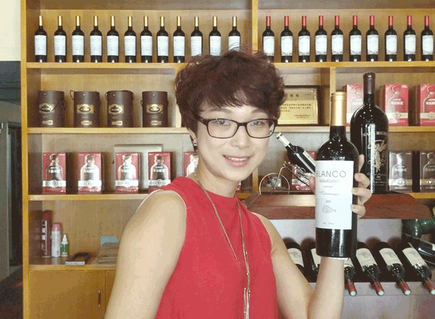

她是中国平安的高级业务员，凭借高营销能力，多次获得平安公司的奖励；她有近十年的传统营销经验，接触过各大品牌的产品，曾经带领千人的营销团队，创下惊人的销售业绩，有丰富的营销管理经验。她还是较早一批接触微商行业的先行者，在微营销行业做过服装、化妆品、艺术品市场，积累了超高的关注度，可以说是微商界的营销女王。
顺应市场，选择合适的产品
现在是电商的时代，网络的发展速度很快，事物更新换代可能就在朝夕之间，所以靖雅从来不固守某一种产品，市场需要哪些产品，她就做哪些产品，她认为合适的产品和营销技巧一样重要。但是在不断更换产品的同时，她一直在寻求一款适合任何消费人群的、可以长期营销的产品作为微营销事业的主要业务。红酒作为一种饮料，可以说是快消品，消费的速度非常快，同时，作为一种收藏投资，增值的空间比较大，而且随着现代化的发展，红酒不仅是贵族消费的奢侈品，普通大众也在消费红酒。在朋友的介绍下，她了解到广东美隆实业投资有限公司创新的营销模式，还亲自品鉴了旗下的各系列的红酒，认为公司实力雄厚，最重要的是产品品质有保证，所以成为了公司的总代理。美隆红酒在微信推广不久后，就受到朋友和客户的一致好评。
走自己的路，让别人去说吧
靖雅在从事营销的时候，遇到最多的问题就是别人的不理解，在传统的销售当中，经常会遇到不耐烦的人，TA不耐就会给你脸色看，在经营微营销事业的时候，就可能遭到朋友被屏蔽或者拉黑，但是靖雅从来不太在意他人的眼光，仍然执着地去发展自己的事业。其实极端一点，借用《小时代》顾里的话“别给我脸色看，你的脸又不是调色盘。”她只是在努力地为她的事业而奋斗，为什么要经受他人的冷眼呢？所幸，个性执着的她并没有因为这些困难而退缩，而是一点一滴，步步为营，去坚持自己的事业，才赢得了当下的成功。靖雅说：“当你做一件别人不理解的事情的时候，你的结果就只用两个，要么是笑话，要么是神话。选择了就不要后悔，选择了就要坚持下去，要让自己所选择的道路，变成星光大道。”
不为盈利，只为朋友
靖雅一开始做微商，并不是为了盈利，而是身边的朋友有需求，逐渐地，在不断的分享之中，更多的朋友找她要产品，她才慢慢地建立起自己的微商事业。在微营销当中，朋友之间的信任是最基本的，最重要的，所以靖雅从来不会为了盈利而营销品质不过关的产品。在每一次根据市场调整营销产品的时候，她都会花费大量的时间和经历去寻求第一线最好的产品，在亲身试验过之后，才会销售到客户手中。经营有“道”
每个人都有自己的人生，走自己的路，让别人去说吧！生活是自己的，何必太在意他人的目光？在自己选择的路上用心奋斗，成就不一样的精彩。希望读者都能像靖雅一样，走出一条独属于自己的人生之路。
上一篇：【CoCo】破茧而出，美丽蜕变